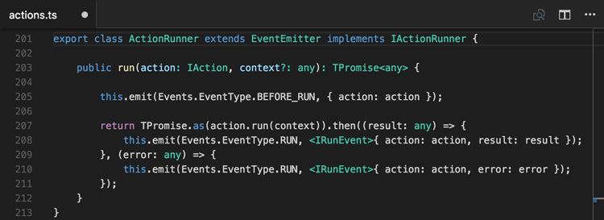
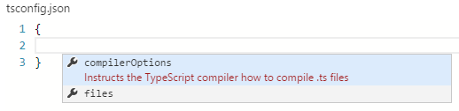
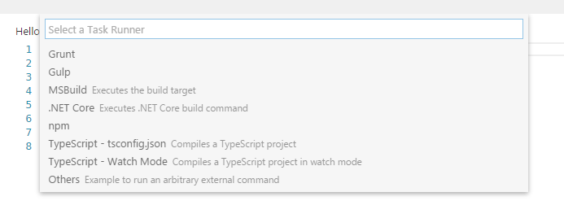
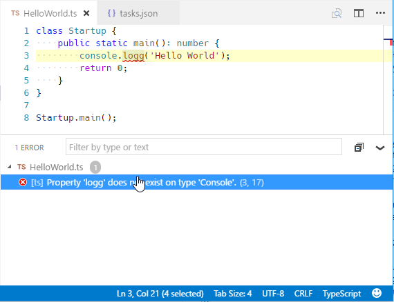
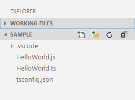
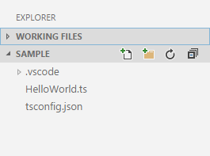
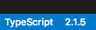
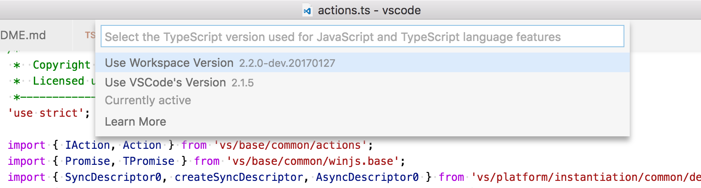
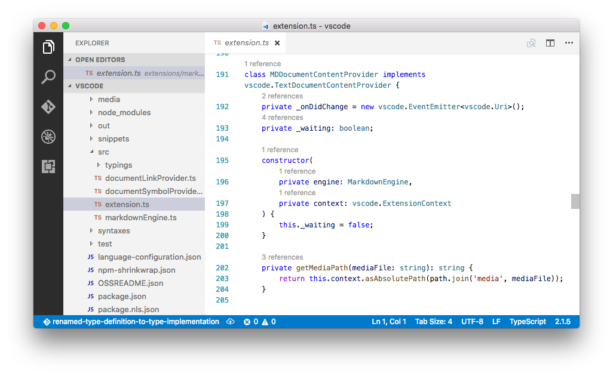
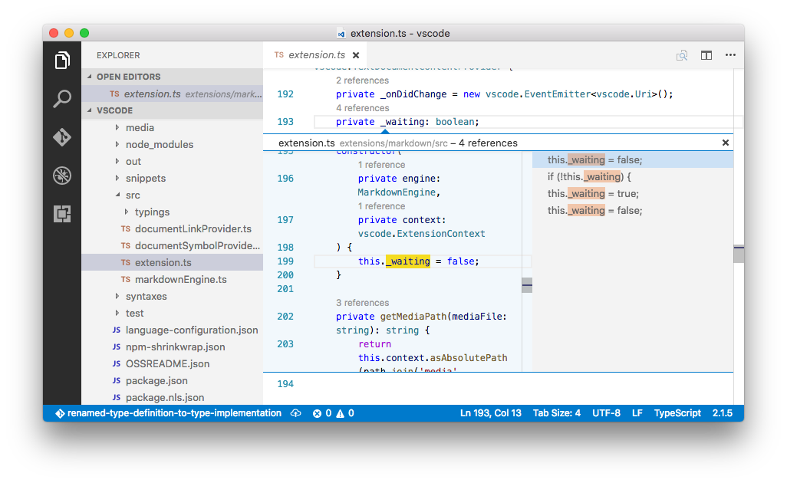

TypeScript is a typed superset of JavaScript that compiles to plain JavaScript.
It offers classes, modules, and interfaces to help you build robust components. A language specification can be found here.

VS Code’s TypeScript support can operate in two different modes:
File Scope: in this mode TypeScript files opened in Visual Studio Code are treated as independent units. As long as a file
a.tsdoesn’t reference a fileb.tsexplicitly (either using /// reference directives or external modules) there is no common project context between the two files.Explicit Project: a TypeScript project is defined via a
tsconfig.jsonfile. The presence of such a file in a directory indicates that the directory is the root of a TypeScript project. The file itself lists the files belonging to the project as well as compiler options. Details about thetsconfig.jsonfile can be found here.
Tip: We recommend that you use explicit projects over file scope projects. Since explicit projects list the files belonging to a project language, features like
Find All References⇧F12 (Windows, Linux Shift+F12) consider the project scope and not the file scope only.
tsconfig.json
Typically the first step in any new TypeScript project is to add in a tsconfig.json file. This defines the TypeScript project settings such as the compiler options and the files that should be included. To do this, open up the folder where you want to store your source and add in a new file named tsconfig.json. Once in this file IntelliSense will help you along the way.

A simple tsconfig.json looks like this for ES5, CommonJS modules and source maps:
|
Now when you create a .ts file as part of the project we will offer up rich editing experiences and syntax validation.
Transpiling TypeScript into JavaScript
VS Code integrates with tsc through our integrated task runner. We can use this to transpile .ts files into .js files. Let’s walk through transpiling a simple TypeScript Hello World program.
Step 1: Create a simple TS file
Open VS Code on an empty folder and create a HelloWorld.ts file, place the following code in that file…
|
Step 2: Create tasks.json
The next step is to set up the task configuration. To do this open the Command Palette with ⇧⌘P (Windows, Linux Ctrl+Shift+P) and type in Configure Task Runner, press Enter to select it. This shows a selection box with templates you can choose from:

Select TypeScript - tsconfig.json. This will create a tasks.json file in the workspace .vscode folder.
The content of the tasks.json file looks like this:
|
Tip: While the template is there to help with common configuration settings, IntelliSense is available for the
tasks.jsonfile as well to help you along. Use ⌃Space (Windows, Linux Ctrl+Space) to see the available settings.
Under the covers we interpret tsc as an external task runner exposing exactly one task: the compiling of TypeScript files into JavaScript files. The command we run is: tsc -p .
Tip: If you don’t have the TypeScript compiler installed, you can get it here.
Step 3: Run the Build Task
As this is the only task in the file, you can execute it by simply pressing ⇧⌘B (Windows, Linux Ctrl+Shift+B) (Run Build Task). At this point you will see an additional file show up in the file list HelloWorld.js.
The example TypeScript file did not have any compile problems, so by running the task all that happened was a corresponding HelloWorld.js and HelloWorld.js.map file was created.
If you have Node.js installed, you can run your simple Hello World example by opening up a terminal and running:
|
Tip: You can also run the program using VS Code’s Run/Debug feature. Details about running and debugging node apps in VS Code can be found here
Step 4: Reviewing Build Issues
Unfortunately, most builds don’t go that smoothly and the result is often some additional information. For instance, if there was a simple error in our TypeScript file, we may get the following output from tsc:
HelloWorld.ts(3,17): error TS2339: Property 'logg' does not exist on type 'Console'.
This would show up in the output window (which can be opened using ⇧⌘U (Windows Ctrl+Shift+U, Linux Ctrl+K Ctrl+H)) and selecting Tasks in the output view dropdown. We parse this output for you and highlight detected problems in the Status Bar.
You can click on that icon to get a list of the problems and navigate to them.

You can also use the keyboard to open the list ⇧⌘M (Windows, Linux Ctrl+Shift+M).
Tip: Tasks offer rich support for many actions. Check the Tasks topic for more information on how to configure them.
Goto Symbol & Show All Symbols
⇧⌘O (Windows, Linux Ctrl+Shift+O): lists all defined symbols of the current open TypeScript and lets you navigate in it.
⌘T (Windows, Linux Ctrl+T): lets you search all symbols defined in the current project or file scope. You need to have a TypeScript file open in the active editor.
Format Code
⇧⌥F (Windows Shift+Alt+F, Linux Ctrl+Shift+I): formats the whole document.
⌘K ⌘F (Windows, Linux Ctrl+K Ctrl+F): formats the currently selected source code.
JSDoc Support
VS Code offers JSDoc support for TypeScript. Besides syntax coloring, we help you enter JSDoc comments. Simply type /** and it will auto insert the closing */. Pressing Enter inside a JSDoc block will indent the next line and auto insert a *.
JavaScript Source Map Support
TypeScript debugging supports JavaScript source maps. Enable this by setting the sourceMaps attribute to true in the project’s launch configuration file launch.json. In addition, you can specify a TypeScript file with the program attribute.
To generate source maps for your TypeScript files, compile with the --sourcemap option or set the sourceMap property in the tsconfig.json file to true.
In-lined source maps (a source map where the content is stored as a data URL instead of a separate file) are also supported, although in-lined source is not yet supported.
Setting a different outFiles for generated files
If generated (transpiled) JavaScript files do not live next to their source, you can help the VS Code debugger locate them by setting the outFiles attribute in the launch configuration. Whenever you set a breakpoint in the original source, VS Code tries to find the generated source by searching the files specified by glob patterns in outFiles.
Hiding Derived JavaScript Files
When you are working with TypeScript, you often don’t want to see generated JavaScript files in the explorer or in search results. VS Code offers filtering capabilities with a files.exclude setting (File > Preferences > Workspace Settings) and you can easily create an expression to hide those derived files:
"**/*.js": { "when": "$(basename).ts"}
This pattern will match on any JavaScript file (**/*.js) but only if a sibling TypeScript file with the same name is present. The file explorer will no longer show derived resources for JavaScript if they are compiled to the same location.
 
Mixed TypeScript and JavaScript projects
It is now possible to have mixed TypeScript and JavaScript projects. To enable JavaScript inside a TypeScript project, you can set the allowJs property to true in the tsconfig.json.
Tip: The
tsccompiler does not detect the presence of ajsconfig.jsonfile automatically. Use the–pargument to maketscuse yourjsconfig.jsonfile, e.g.tsc -p jsconfig.json.
Using Newer TypeScript Versions
VS Code ships with a recent stable version of TypeScript, and you can also configure the version of TypeScript that VS Code uses. The active version of TypeScript is displayed in the status bar when viewing a TypeScript or JavaScript file:

To use a different TypeScript version by default, configure typescript.tsdk in your user settings to point to a directory containing the TypeScript tsserver.js file. You can find the TypeScript installation location using npm list -g typescript. The tsserver.js file is usually in the lib folder.
For example:
|
You can also configure a specific version of TypeScript in a particular workspace by adding a typescript.tsdk workspace setting pointing to the directory of the tsserver.js file:
|
If you run npm install typescript in your workspace and your workspace does not have a typescript.tsdk workspace setting, VS Code will pick up the version of TypeScript that you installed in the workspace.
Tip: To get a specific TypeScript version, specify
@version. For example for TypeScript 2.0, you would usenpm install typescript@2.0.0. To preview the next version of TypeScript, runnpm install typescript@next.
If your workspace has a specific TypeScript version, you can switch between the workspace version of TypeScript and the version that VS Code uses by default by opening a TypeScript or JavaScript file in the workspace and clicking on the TypeScript version number in the status bar. A message box will appear asking you which version of TypeScript VS Code should use:

After switching versions of TypeScript or changing typescript.tsdk, restart VS Code to have the change take effect. You can switch back to the version of TypeScript that comes with VS Code by clicking on the TypeScript version in the status bar again.
References Code Lens
The TypeScript references code lens displays an inline count of reference for classes, interfaces, methods, properties, and exported objects:

You can enable this by setting "typescript.referencesCodeLens.enabled": true.
Click on the reference count to quickly browse a list of references:

TypeScript Extensions
VS Code provides many features for TypeScript out of the box. In addition to what comes built-in, you can install an extension for greater functionality.
Tip: The extensions shown above are dynamically queried. Click on an extension tile above to read the description and reviews to decide which extension is best for you. See more in the Marketplace.
Next Steps
OK, read on to find out about:
- JavaScript - we have several JavaScript specific features in VS Code
- Tasks - we used tasks to transpile your TS file. Read more to find out what else tasks can do
- Editing Evolved - dig into multi-cursor, snippets and more
- Debugging - we support debugging TypeScript Node.js apps
Common Questions
Q: How do I resolve a TypeScript “Cannot compile external module” error?
A: If you get that error, resolve it by creating a tsconfig.json file in the root folder of your project. The tsconfig.json file lets you control how Visual Studio Code compiles your TypeScript code. For more information, see the tsconfig.json overview.
Due to a current limitation, you must restart VS Code after adding the tsconfig.json file.